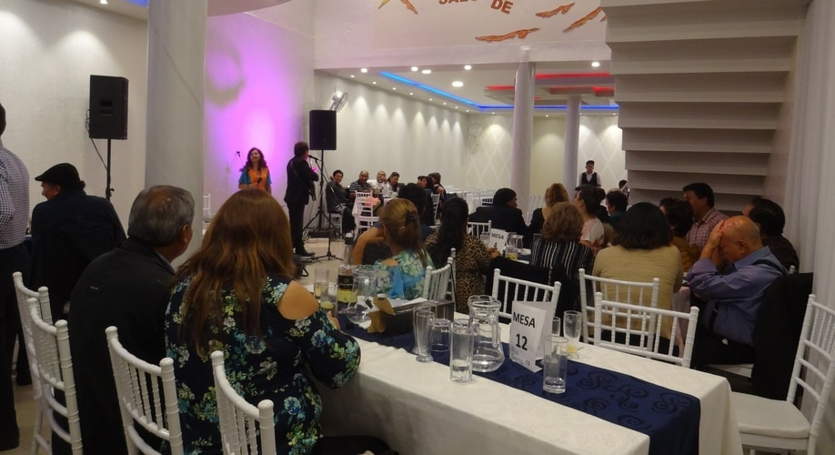

FIESTAS

1. RECEPCIÓN
- Tres rondas saladitos en mesa.
2. BRINDIS
- Sidra.
- Galletas de champagne.
3. CENA
- Plato servido con 2 carnes (pollo, res o cerdo) y 3 guarniciones a elección del cliente.
4. BEBIDAS
- Dos botellas por mesa de 10 personas, a elegir:
- Ron Flor de Caña 5 años, Abuelo Añejo, Carta vieja de 1 litro.
- Fernet Branca 750 ml.
- Singani Casa Real Etiqueta negra 750 ml.
- Bar abierto de gaseosas, hielos, agua y limón.
5. MOBILIARIO
- Mesas con mantelería (mantel blanco, sobre mantel de acuerdo a colores a elección).
- Sillas tiffany (Adornadas con gasa del color elegido).
- Mesa de torta con mantelería especial.
- Cristalería necesaria para el evento.
- Vajilla y cubertería necesaria para el evento.
- Ambiente de descanso exclusivo para los novios.
- Circuito cerrado de cámaras de seguridad.
- Iluminación decorativa con luces led de color en dry walls.
6. SONIDOS Y EFECTOS ESPECIALES
- Amplificación con música coordinada con el cliente.
- Cabezas led de color ambientales.
7. PERSONAL
- Garzones.
- Seguridad
- Limpieza.
- Recepción.
8. CONDICIONES
- Una vez confirmada la fecha del evento, la reserva se realiza con un deposito del 50% del valor total del paquete, el saldo final se paga una semana antes del evento.
- El numero definitivo de invitados, menú y otros se confirmará 7 días antes de la fecha del evento.
- Se programará el día de la degustación de la cena y/o bocaditos para la elección de los novios (adicional).
- La cotización total del paquete no incluye arreglos, flores ni torta.
- La duración del evento es de 7-8 horas y la hora limite de finalización es a las 2:00 a.m., o según ordenanza municipal.
- Se pone a disposición los ambientes del salón para los ensayos.
- La garantía es de 500 Bs. (reposición de cristalería, vajilla, mantelería u otros, se realizará al día siguiente al evento).
- Medidas de seguridad: Todos los proveedores cuentan con todas las medidas de seguridad y desinfección tanto de mobiliario como de todo lo que se usará el día del evento. La comida se servirá con todos las medidas de bioseguridad.